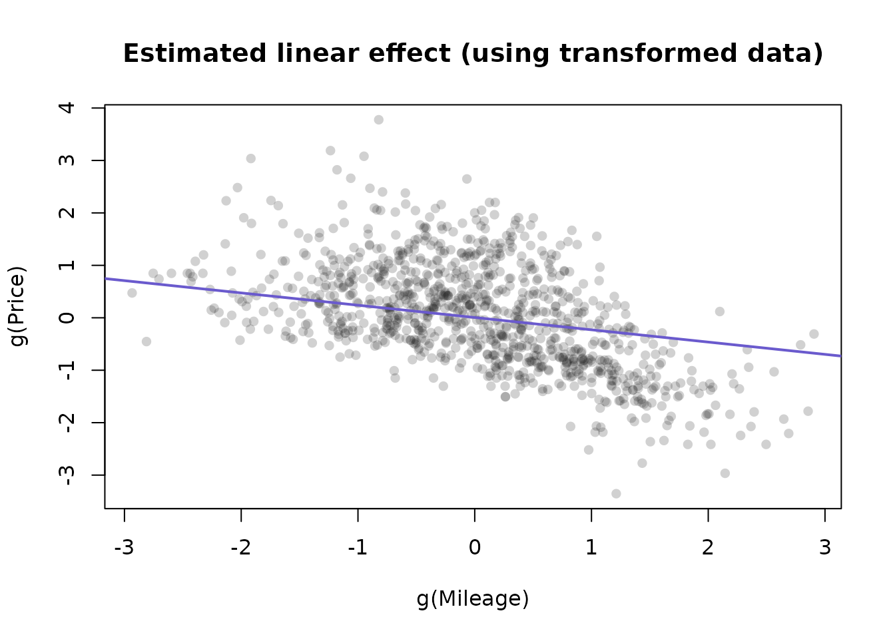
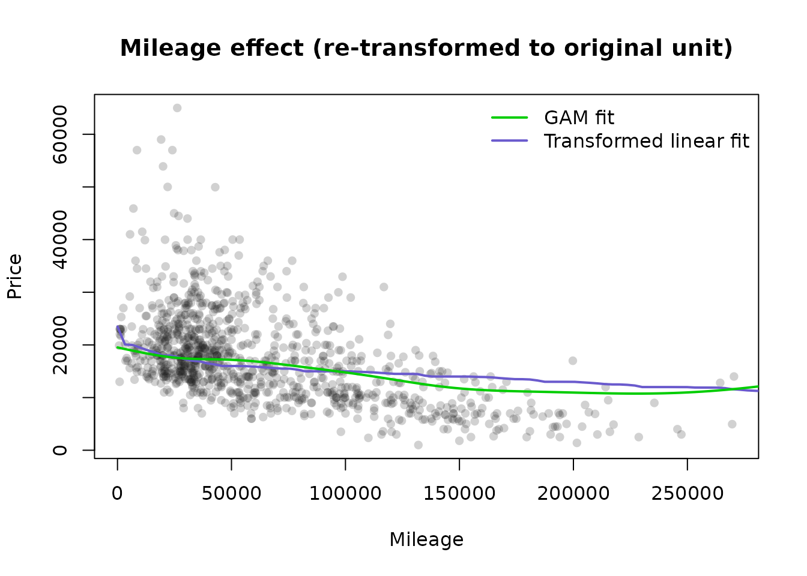

Using the bestNormalize Package
Ryan A Peterson
2021-06-03
Source:vignettes/bestNormalize.Rmd
bestNormalize.RmdIntroduction
The bestNormalize package contains a suite of transformation-estimating functions that can be used to normalize data. The function of the same name attempts to find and execute the best of all of these potential normalizing transformations. In this package, we define “normalize” as in “to render data Gaussian”, rather than transform it to the 0-1 scale.
There are many instances where researchers may want to normalize a variable:
The (often problematic) assumption of normality of the outcome (conditional on the covariates) in the classical linear regression problem. Over the years many methods have been used to relax this assumption: generalized linear models, quantile regression, survival models, etc. One technique that is still somewhat popular in this context is to “beat the data” to look normal via some kind of normalizing transformation. This could be something as simple as a log transformation, or something as complex as a Yeo-Johnson transformation. While perhaps not the most elegant solution the problem, often this technique works well as a quick and dirty solution.
Another increasingly popular application of normalization occurs in applied regression settings with highly skewed distributions of the covariates. In these settings, there exists the tendency to have high leverage points (and highly influential points), even when one centers and scales the covariates. When examining interactions, these influential points can become especially problematic since the leverage of that point is amplified for every child interaction of which it is a parent. Normalization of the covariates mitigates the leverage and influence of these covariates, which allows for easier model selection. As a result, popular model selection packages such as
caretandrecipeshave built-in mechanisms to normalize the predictor variables (they call this “preprocessing”). This concept is unique in that it forgoes the assumption of linearity between the outcome and the covariate, opting instead for a linear relationship between Y and the transformed value of the covariate (which in many cases may be more plausible).
This package is designed to make this normalization transformation as effortless and consistent as possible. This package also introduces Ordered Quantile (ORQ) normalization via orderNorm, a normalization technique based off of a rank mapping to the normal distribution, which guarantees normally distributed transformed data (if ties are not present). We show in the accompanying paper that ORQ normalization performs very consistently across different distributions. It is able to successfully transform left/right skewed data, multimodal data, and even data generated from a Cauchy distribution (efficacy of transformation was tested on out-of-sample data).
The transformations contained in this package and implemented in bestNormalize are reversible (i.e., 1-1), which allows for straight-forward interpretation and consistency. In other words, any analysis performed on the normalized data can be interpreted using the original unit (see application).
Methods
There are several normalization transformation options, each with their own implementations and limitations. While some of these methods are implemented well in other R packages, the bestNormalize package puts them all under the same umbrella syntax that makes them easy to apply in a wide range of situations.
The Lambert W x F transformation
The Lambert W x F transformation, proposed by Goerg and implemented in the LambertW package, is essentially a mechanism that de-skews a random variable \(X\) using moments. The method is motivated by a system theory, and is alleged to be able to transform any random variable into any other kind of random variable, thus being applicable to a large number of cases.
One of the package’s main functions is Gaussianize, which is similar in spirit to the purpose of this package. However, I have found in practice that often times, this method does not perform as well as the Box Cox or the Yeo-Johnson transformation.
This transformations can handle three types of transformations: skewed, heavy-tailed, and skewed heavy-tailed. For more details on this transformation, consult the documentation for the Lambert W package.
The Box Cox tranformation
The Box Cox transformation, proposed by Box and Cox in their famous 1964 paper and implemented with differing syntax and methods in many packages in R (see caret, MASS, forecast), is a straightforward transformation that typically only involves one parameter, \(\lambda\):
\[ g(x; \lambda) = \boldsymbol 1 _{(\lambda \neq 0)} \frac{x^\lambda-1}{\lambda} + \boldsymbol 1_{(\lambda = 0)} \log x \]
Where \(x\) refers to the datum in the original unit (pre-transformation). The \(\lambda\) parameter can be estimated via maximum likelihood.
The Yeo-Johnson transformation
The Yeo-Johnson transformation, proposed by Yeo and Johnson in 2000, attempts to find the value of lambda (in the following equation) that minimizes the Kullback-Leibler distance between the normal distribution and the transformed distribution.
\[ \begin{aligned} g(x;\lambda) &= \boldsymbol 1 _{(\lambda \neq 0, x \geq 0)} \frac{(x+1)^\lambda-1}{\lambda} \\ &+ \boldsymbol 1_{(\lambda = 0, x \geq 0)} \log (x+1) \\ &+ \boldsymbol 1_{(\lambda \neq 2, x < 0)} \frac{(1-x)^{2-\lambda}-1}{\lambda - 2} \\ &+ \boldsymbol 1_{(\lambda = 2, x < 0)} -\log (1-x) \\ \end{aligned} \]
This method has the advantage of working without having to worry about the domain of \(x\). As with the Box-Cox \(\lambda\), this \(\lambda\) parameter can be estimated via maximum likelihood.
The Ordered Quantile technique
The ORQ normalization technique is based on the following transformation (originally discussed, as far as I can find, by Bartlett in 1947 and further developed in 1952 by Van der Waerden in “Order tests for the two sample problem and their power”):
Let \(x\) refer to the original data. Then the transformation is:
\[ g(x) = \Phi ^{-1} \left(\frac{\text{rank} (x) - 1/2}{\text{length}(x) }\right) \]
ORQ normalization, while based on this transformation, is a little more complicated to implement in many settings where the transformation needs to be applied on new data.
On new data within the range of the original data, this transformation refers to the linear interpolation between two of the original data points. On new data outside the range of the original data, the transformation returns a warning and extrapolates using a shifted logit approximation of the ranks to the original data. This is visualized below via the iris data set, on the Petal.Width variable.
The reason for the shifted logit extrapolation is that it ensures that the function is 1-1, and can handle data outside the original (observed) domain. This approximation will usually be relatively minimal since we should not expect to see many observations outside the observed range if the sample size is large enough.
The ORQ technique will not guarantee a normal distribution in the presence of ties, but it still could yield the best normalizing transformation when compared to the other possible approaches.
Other included transformations
In addition to the techniques above, the bestNormalize package performs and evaluates:
- \(\log_b(x + a)\) with \(a = \max(0, -\min(x) + \epsilon)\) by default
- \(\sqrt{x + a}\) with \(a = \max(0, -\min(x) + \epsilon)\) by default
- \(\exp(x)\)
- \(\text {arcsinh}(x) = log(x + \sqrt{x^2 + 1})\)
Other not-included transformations
There have been a range of other normalization techniques discussed since the original Box-Cox paper that are not included in this package (at the time of writing). Many of these transformations have their own strengths and weaknesses.
These include (but are not limited to): Modified Box Cox (1964), Manly’s Exponential (1976), John/Draper’s Modulus (1980), Bickel/Doksum’s Modified Box Cox (1981).
The framework of this package is to create an S3 class for each transformation, so the addition of other normalization techniques would be easy extensions of this package (readers can feel free to submit a pull request to this package’s GitHub page with new transformation techniques if they feel so inclined).
The bestNormalize package does also include a function to perform a binarizing transformation. This is provided as a potential “last resort” if a vector is really unable to be transformed to a normally distributed variable. In cases when a user is automatically normalizing covariates, this is useful when they may accidentally try to normalize a vector with not enough unique values.
Selecting the best technique
The bestNormalize function selects the best transformation according to the Pearson P statistic (divided by its degrees of freedom), as calculated by the nortest package. There are a variety of normality tests out there, but the benefit of the Pearson P / df is that it is a relatively interpretable goodness of fit test, and the ratio P / df can be compared between transformations as an absolute measure of the departure from normality (if the data follows close to a normal distribution, this ratio will be close to 1). The transformation whose transformed values fit normality the closest according to this statistic (or equivalently, this ratio), is selected by bestNormalize. The ratios are printed when the object is printed, see examples in the next section.
The ORQ technique is destined to win by this (in-sample) metric, since it is forcing the transformed data to follow a normal distribution. For this reason, by default the bestNormalize function calculates an out-of-sample estimate for the P / df statistic. Since this method requires repeated cross-validation, it can be a little bit problematic:
- The results and the chosen transformation can depend on the seed,
- It takes considerably longer to estimate than the in-sample statistic, and
- It is unclear how to choose the number of folds and repeats
To respond to these issues, (1) is only important for small sample sizes, and luckily the transformations chosen in cases where it’s a close call will look very similar to one another, so it shouldn’t make a practical difference. For (2), we have allowed for parallelization to slightly speed up this process, however there could be better ways of speeding this up. For (3), we recommend 10-fold cross-validation with 5 repeats as the default, but if the sample is small, it could be worth going to 5 folds instead with more repeats; accurate estimation of P/df requires a relatively large fold size (as a rule of thumb, 20 observations per fold seems to be enough for most cases, but this can vary of course depending on the distribution).
If the user specifies out_of_sample = FALSE, this will highly speed up the process as the function does not perform repeated CV. However the ORQ normalization will virtually always be chosen. If this method is chosen, we recommend also setting allow_orderNorm = FALSE in order to pick the best of the other transformations, otherwise the user may as well choose orderNorm to begin with.
The parallelization for bestNormalize is performed via the parallel package, and implemented by using the cluster argument. Users should create a cluster using makeCluster, then pass that cluster into the bestNormalize function (see Parallel in “Examples” section). The amount that this speeds up the estimation of out-of-sample estimates depends on the number of repeats, the number of cores, and the sample size of the vector to be normalized. The plot below shows the estimation time for 10-fold cross-validation with 15 repeats on a gamma distributed random variable with various sample sizes and cores. Note that the estimates below do not count the time it takes to call makeCluster or stopCluster. Evidently, the speed-up occurs past a few thousand observations for 15 repeats.

Examples
In this section, I provide some code that performs each of the transformations described in the prior section.
Basic Implementation

This data is clearly not normal. Let’s use the bestNormalize functionality to perform a suite of potential transformations, and see how each method performs.
# Perform some tranformations individually
# arcsinh transformation
(arcsinh_obj <- arcsinh_x(x))## Standardized asinh(x) Transformation with 250 nonmissing obs.:
## Relevant statistics:
## - mean (before standardization) = 0.7383146
## - sd (before standardization) = 0.5458515
# Box Cox's Transformation
(boxcox_obj <- boxcox(x))## Standardized Box Cox Transformation with 250 nonmissing obs.:
## Estimated statistics:
## - lambda = 0.3254863
## - mean (before standardization) = -0.3659267
## - sd (before standardization) = 0.9807881
# Yeo-Johnson's Transformation
(yeojohnson_obj <- yeojohnson(x))## Standardized Yeo-Johnson Transformation with 250 nonmissing obs.:
## Estimated statistics:
## - lambda = -0.7080476
## - mean (before standardization) = 0.4405464
## - sd (before standardization) = 0.2592004
# orderNorm Transformation
(orderNorm_obj <- orderNorm(x))## orderNorm Transformation with 250 nonmissing obs and no ties
## - Original quantiles:
## 0% 25% 50% 75% 100%
## 0.001 0.268 0.721 1.299 4.161
# Pick the best one automatically
(BNobject <- bestNormalize(x))## Best Normalizing transformation with 250 Observations
## Estimated Normality Statistics (Pearson P / df, lower => more normal):
## - arcsinh(x): 1.7917
## - Box-Cox: 1.0442
## - Center+scale: 3.0102
## - Exp(x): 9.5306
## - Log_b(x+a): 1.7072
## - orderNorm (ORQ): 1.1773
## - sqrt(x + a): 1.144
## - Yeo-Johnson: 1.1875
## Estimation method: Out-of-sample via CV with 10 folds and 5 repeats
##
## Based off these, bestNormalize chose:
## Standardized Box Cox Transformation with 250 nonmissing obs.:
## Estimated statistics:
## - lambda = 0.3254863
## - mean (before standardization) = -0.3659267
## - sd (before standardization) = 0.9807881
# Last resort - binarize
(binarize_obj <- binarize(x))## Binarize Transformation with 250 nonmissing obs.
## Estimated Statistic:
## - median = 0.7211385These objects can then be fed into the predict function to perform the transformation on new values. The reverse transformation is also possible with this function. Below we plot the transformation for a range of new x values
xx <- seq(min(x), max(x), length = 100)
plot(xx, predict(arcsinh_obj, newdata = xx), type = "l", col = 1, ylim = c(-4, 4),
xlab = 'x', ylab = "g(x)")
lines(xx, predict(boxcox_obj, newdata = xx), col = 2)
lines(xx, predict(yeojohnson_obj, newdata = xx), col = 3)
lines(xx, predict(orderNorm_obj, newdata = xx), col = 4)
legend("bottomright", legend = c("arcsinh", "Box Cox", "Yeo-Johnson", "OrderNorm"),
col = 1:4, lty = 1, bty = 'n')
To examine how each of them performed (In-Sample), we can visualize the transformed values in a histogram.
par(mfrow = c(2,2))
MASS::truehist(arcsinh_obj$x.t, main = "Arcsinh transformation", nbins = 12)
MASS::truehist(boxcox_obj$x.t, main = "Box Cox transformation", nbins = 12)
MASS::truehist(yeojohnson_obj$x.t, main = "Yeo-Johnson transformation", nbins = 12)
MASS::truehist(orderNorm_obj$x.t, main = "orderNorm transformation", nbins = 12)
The best transformation in this case is plotted below.
par(mfrow = c(1,2))
MASS::truehist(BNobject$x.t,
main = paste("Best Transformation:",
class(BNobject$chosen_transform)[1]), nbins = 12)
plot(xx, predict(BNobject, newdata = xx), type = "l", col = 1,
main = "Best Normalizing transformation", ylab = "g(x)", xlab = "x")
Visualizing out-of-sample estimates of normality
The bestNormalize function will save the estimated normality statistics that it obtained for each fold and repeat of cross-validation. Users can visualize these relatively easily via a boxplot (see below), which may give some insight into how much the transformation is truly preferred by the normality statistic, or if it doesn’t matter so much as much which transformation is chosen. In this example, Box-Cox, Arcsin h, and ORQ seem to be doing similarly to each other, whereas the Yeo-Johnson is under-performing.
boxplot(log10(BNobject$oos_preds), yaxt = 'n')
axis(2, at=log10(c(.1,.5, 1, 2, 5, 10)), labels=c(.1,.5, 1, 2, 5, 10))
Improving speed of estimation
The bestNormalize function can be quite slow, since it’s using cross validation to estimate the out-of-sample efficacy. If the user specifies out_of_sample = FALSE", this will highly speed up the process, however the ORQ normalization will virtually always be chosen. If this method is chosen, we recommend setting allow_orderNorm = FALSE in order to pick the best of the other transformations.
bestNormalize(x, allow_orderNorm = FALSE, out_of_sample = FALSE)## Best Normalizing transformation with 250 Observations
## Estimated Normality Statistics (Pearson P / df, lower => more normal):
## - arcsinh(x): 4.401
## - Box-Cox: 0.7435
## - Center+scale: 8.087
## - Exp(x): 64.6975
## - Log_b(x+a): 3.47
## - sqrt(x + a): 0.9145
## - Yeo-Johnson: 1.7125
## Estimation method: In-sample
##
## Based off these, bestNormalize chose:
## Standardized Box Cox Transformation with 250 nonmissing obs.:
## Estimated statistics:
## - lambda = 0.3254863
## - mean (before standardization) = -0.3659267
## - sd (before standardization) = 0.9807881We also make it easy for users to parallelize the repeated CV process via the cluster argument and the parallel package. A cluster can be set up with makeCluster and passed to bestNormalize via the cluster = argument.
This speed-up is dependent on the number of repeats, the length of the vector to be transformed, and the number of cores in the cluster. It could well make the computation slower due to the overhead computations of setting up the process, so in cases where the sample size is relatively small and the number of repeats is also small, it is probably better to not worry about the parallelization.
Leave-one-out CV
As of version 1.3, bestNormalize has the loo argument, which if set to TRUE will compute the leave-one-out cross-validation transformations for each observation and method. Instead of the out-of-sample estimates for normality being the mean of the values over repeated folds, now the estimate for normality is simply calculated for the distribution of leave-one-out transformed values. This is computationally difficult, so it also works with the cluster argument if desired.
Visualizing transformations in ggplot2 with scales package
As of version 1.7, users can use the scales package in conjunction with ggplot2 to facilitate plotting variables that have undergone a transformation with bestNormalize (or any other method).
library(ggplot2)
x <- rgamma(1000, 1, .1)
bn <- bestNormalize(x)
bn## Best Normalizing transformation with 1000 Observations
## Estimated Normality Statistics (Pearson P / df, lower => more normal):
## - arcsinh(x): 1.4556
## - Box-Cox: 1.088
## - Center+scale: 6.9536
## - Exp(x): 115.8928
## - Log_b(x+a): 2.0484
## - orderNorm (ORQ): 1.1852
## - sqrt(x + a): 1.5487
## - Yeo-Johnson: 1.1946
## Estimation method: Out-of-sample via CV with 10 folds and 5 repeats
##
## Based off these, bestNormalize chose:
## Standardized Box Cox Transformation with 1000 nonmissing obs.:
## Estimated statistics:
## - lambda = 0.2567004
## - mean (before standardization) = 2.392499
## - sd (before standardization) = 1.893565
# say y is related linearly to the transformed x
y <- bn$x.t * 1 + rnorm(1000)
# A log transformation does OK...
ggplot(data.frame(x=x,y=y), aes(x, y)) +
geom_point() +
scale_x_continuous(trans = "log", breaks = scales::log_breaks())
# Create bestNormalize scale for use in ggplot (using bestNormalize object)
bn_trans <- scales::trans_new(
name = "bn_trans",
trans = function(x) predict(bn, newdata = x),
inverse = function(x) predict(bn, newdata = x, inverse = TRUE)
)
ggplot(data.frame(x=x,y=y), aes(x, y)) +
geom_point() +
scale_x_continuous(trans = bn_trans)
Application to autotrader data
The autotrader data set was scraped from the autotrader website as part of this package (and because at the time of writing, I needed to buy a car). I apply the bestNormalize functionality to de-skew mileage, age, and price in my pricing model. See ?autotrader for more information on this data set.
data("autotrader")
autotrader$yearsold <- 2017 - autotrader$Year
### Using best-normalize
(priceBN <- bestNormalize(autotrader$price, r = 1, k = 5))## Best Normalizing transformation with 6283 Observations
## Estimated Normality Statistics (Pearson P / df, lower => more normal):
## - arcsinh(x): 7.3646
## - Box-Cox: 4.2174
## - Center+scale: 6.527
## - Log_b(x+a): 7.3646
## - orderNorm (ORQ): 1.1586
## - sqrt(x + a): 4.2754
## - Yeo-Johnson: 4.2174
## Estimation method: Out-of-sample via CV with 5 folds and 1 repeats
##
## Based off these, bestNormalize chose:
## orderNorm Transformation with 6283 nonmissing obs and ties
## - 2465 unique values
## - Original quantiles:
## 0% 25% 50% 75% 100%
## 722 11499 15998 21497 64998Note that orderNorm throws a warning due to the ties in the price vector. We can see that the estimated normality statistic for the OrderNorm transformation is close to one, however, so we know it is performing quite well. It is also performing better than all of the other transformations.
(mileageBN <- bestNormalize(autotrader$mileage, r = 1, k = 5))## Best Normalizing transformation with 6283 Observations
## Estimated Normality Statistics (Pearson P / df, lower => more normal):
## - arcsinh(x): 4.7664
## - Box-Cox: 4.2613
## - Center+scale: 22.0413
## - Log_b(x+a): 4.7657
## - orderNorm (ORQ): 1.1199
## - sqrt(x + a): 7.2496
## - Yeo-Johnson: 4.2627
## Estimation method: Out-of-sample via CV with 5 folds and 1 repeats
##
## Based off these, bestNormalize chose:
## orderNorm Transformation with 6283 nonmissing obs and ties
## - 6077 unique values
## - Original quantiles:
## 0% 25% 50% 75% 100%
## 2 29099 44800 88950 325556Similarly, the ORQ normalization performed best for mileage, and the ties didn’t seem to be too big of a deal.
(yearsoldBN <- bestNormalize(autotrader$yearsold, r = 1, k = 5))## Best Normalizing transformation with 6283 Observations
## Estimated Normality Statistics (Pearson P / df, lower => more normal):
## - arcsinh(x): 170.512
## - Box-Cox: 170.4444
## - Center+scale: 171.1519
## - Exp(x): 1034.8401
## - Log_b(x+a): 170.4138
## - orderNorm (ORQ): 168.0324
## - sqrt(x + a): 170.5971
## - Yeo-Johnson: 171.914
## Estimation method: Out-of-sample via CV with 5 folds and 1 repeats
##
## Based off these, bestNormalize chose:
## orderNorm Transformation with 6283 nonmissing obs and ties
## - 17 unique values
## - Original quantiles:
## 0% 25% 50% 75% 100%
## 1 3 4 7 17Here we see something peculiar; none of the normalizing transformations performed well according to the normality statistics. The frequency of ties in this case makes it very difficult to find a normalizing transformation (see figure below as to why this is). Even so, orderNorm is chosen as it has the lowest estimated P/df statistic.
par(mfrow = c(3, 2))
MASS::truehist(autotrader$price)
MASS::truehist(priceBN$x.t)
MASS::truehist(autotrader$mileage)
MASS::truehist(mileageBN$x.t)
MASS::truehist(autotrader$yearsold)
MASS::truehist(yearsoldBN$x.t)
par(mfrow = c(2, 2))
price.xx <- seq(min(autotrader$price), max(autotrader$price), length = 100)
mileage.xx <- seq(min(autotrader$mileage), max(autotrader$mileage), length = 100)
yearsold.xx <- seq(min(autotrader$yearsold), max(autotrader$yearsold), length = 100)
plot(price.xx, predict(priceBN, newdata = price.xx), type = "l",
main = "Price bestNormalizing transformation",
xlab = "Price ($)", ylab = "g(price)")
plot(mileage.xx, predict(mileageBN, newdata = mileage.xx), type = "l",
main = "Mileage bestNormalizing transformation",
xlab = "Mileage", ylab = "g(Mileage)")
plot(yearsold.xx, predict(yearsoldBN, newdata = yearsold.xx), type = "l",
main = "Years-old bestNormalizing transformation",
xlab = "Years-old", ylab = "g(Years-old)")
Next, we will fit a linear model on the transformed values of each variable. The reverse-transformation will allow us to visualize how these variables work into the model on their original units.
For the sake of illustration, we also plot the effects of a GAM model to see if there is a big difference. The GAM models seem to be more influenced by outliers than the fits to the transformed data.
autotrader$price.t <- priceBN$x.t
autotrader$mileage.t <- mileageBN$x.t
autotrader$yearsold.t <- yearsoldBN$x.t
fit4 <- lm(price.t ~ mileage.t + yearsold.t,
data = autotrader)
summary(fit4)##
## Call:
## lm(formula = price.t ~ mileage.t + yearsold.t, data = autotrader)
##
## Residuals:
## Min 1Q Median 3Q Max
## -2.4252 -0.5778 -0.1247 0.4973 3.1437
##
## Coefficients:
## Estimate Std. Error t value Pr(>|t|)
## (Intercept) 0.005454 0.009855 0.553 0.58
## mileage.t -0.234321 0.015657 -14.966 <2e-16 ***
## yearsold.t -0.440999 0.016253 -27.134 <2e-16 ***
## ---
## Signif. codes: 0 '***' 0.001 '**' 0.01 '*' 0.05 '.' 0.1 ' ' 1
##
## Residual standard error: 0.781 on 6280 degrees of freedom
## Multiple R-squared: 0.3901, Adjusted R-squared: 0.3899
## F-statistic: 2009 on 2 and 6280 DF, p-value: < 2.2e-16
miles.t <- predict(mileageBN, newdata = mileage.xx)
c1 <- coef(fit4)["mileage.t"]
par(mfrow = c(1, 1))
plot(
mileageBN$x.t,
priceBN$x.t,
pch = 16,
col = grey(.1, alpha = .2),
main = "Estimated linear effect (using transformed data)",
xlab = "g(Mileage)",
ylab = "g(Price)"
)
lines(miles.t,
coef(fit4)[1] + c1 * miles.t,
col = "slateblue",
lwd = 2)
## Mileage effect
plot(
autotrader$mileage,
autotrader$price,
pch = 16,
col = grey(.1, alpha = .2),
main = "Mileage effect (re-transformed to original unit)",
xlab = "Mileage",
ylab = "Price"
)
line_vals <- miles.t * c1 + coef(fit4)[1]
lines(
mileage.xx,
y = predict(priceBN, newdata = line_vals, inverse = TRUE),
lwd = 2,
col = "slateblue"
)
# Compare to GAM fit
fit_gam <- mgcv::gam(price ~ s(yearsold) + s(mileage), data = autotrader)
p_gam <- predict(fit_gam, newdata = data.frame(yearsold = mean(autotrader$yearsold),
mileage = mileage.xx))
lines(mileage.xx, p_gam, lwd = 2, col = 'green3')
legend(
'topright',
c("GAM fit", "Transformed linear fit"),
lwd = 2,
col = c("green3", "slateblue"),
bty = "n"
)
## Years Old effect
yo.t <- predict(yearsoldBN, newdata = yearsold.xx)
c2 <- coef(fit4)["yearsold.t"]
plot(
jitter(autotrader$yearsold, 1.5),
autotrader$price,
pch = 16,
col = grey(.1, alpha = .2),
main = "Years old effect (re-transformed to original unit)",
xlab = "Age (Jittered)",
ylab = "Price"
)
line_vals <- yo.t * c2 + coef(fit4)[1]
lines(
yearsold.xx,
y = predict(priceBN, newdata = line_vals, inverse = TRUE),
lwd = 2,
col = "slateblue"
)
# Compare to GAM fit
p_gam <- predict(fit_gam, newdata = data.frame(yearsold = yearsold.xx,
mileage = mean(autotrader$mileage)))
lines(yearsold.xx, p_gam, lwd = 2, col = 'green3')
legend(
'topright',
c("GAM fit", "Transformed linear fit"),
lwd = 2,
col = c("green3", "slateblue"),
bty = "n"
)